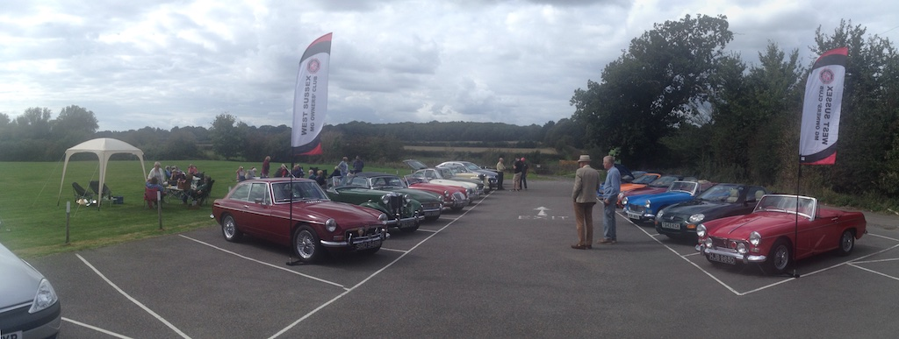

So far this year has not been a good one for taking the TC out. By early September it had only been on a few test runs, since the usual events have been cancelled due to the Covid-19 restrictions.
WSMGOC South Downs Picnic - September
Today (Sunday 6th September) should have been the South Downs Run, but it was cencelled, so the club held a picnic at the Patching and Clapham Village Hall. The event was due to be held from 12 till 4, but we left home at about ten to twelve and were not the last there. The numbers were limited to 30 in case we needed to go into the hall, but the rain kept off. We did, however, leave with most of the others a little early since it was getting cool. Our round trip was only 23 miles.